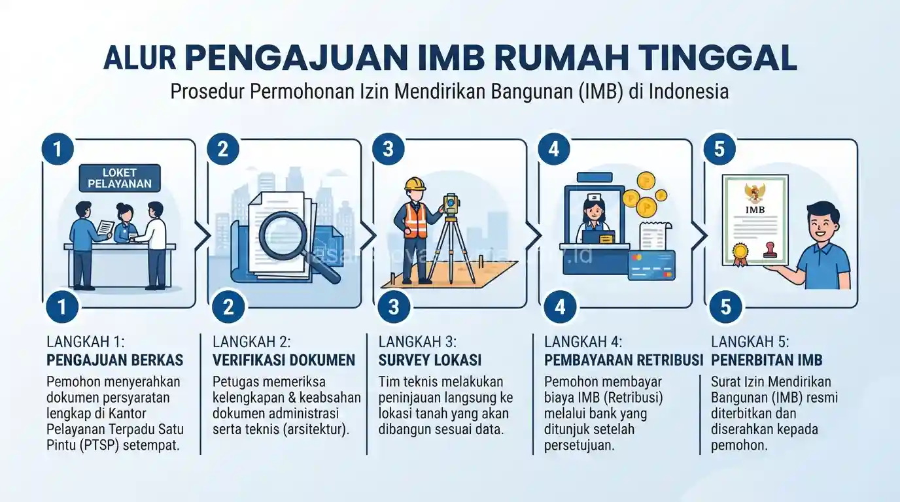

Syarat urus IMB rumah tinggal secara umum mencakup dokumen kepemilikan tanah, gambar rencana bangunan, dan surat pengantar dari kelurahan setempat, sebelum diajukan ke dinas perizinan untuk diverifikasi.
Proses ini penting dilakukan sebelum pembangunan dimulai agar rumah memiliki status legal dan terhindar dari risiko pembongkaran di kemudian hari.
Apa Saja Dokumen yang Dibutuhkan untuk Urus IMB Rumah Tinggal?
Dokumen utama yang umumnya diminta meliputi bukti kepemilikan tanah, KTP pemohon, dan gambar rencana bangunan yang disusun oleh arsitek atau drafter berpengalaman.
Berikut kelengkapan dokumen yang biasanya diperlukan:
- Fotokopi sertifikat tanah atau bukti kepemilikan lahan yang sah.
- Fotokopi KTP dan NPWP pemohon.
- Gambar rencana bangunan (site plan, denah, tampak, dan potongan).
- Surat pengantar RT/RW dan kelurahan setempat.
- Bukti pembayaran PBB tahun berjalan.
Kelengkapan dokumen ini bisa berbeda tergantung kebijakan pemerintah daerah masing-masing, sehingga sebaiknya dikonfirmasi ulang ke dinas perizinan setempat sebelum pengajuan.
Gambar rencana bangunan yang diajukan sebaiknya sudah matang secara konsep, sehingga ada baiknya konsep desain sudah difinalisasi terlebih dahulu, misalnya dengan mengacu pada referensi desain rumah minimalis modern sebelum digambar ulang secara teknis oleh drafter.
Bagaimana Alur Pengajuan IMB dari Kelurahan hingga Dinas Terkait?
Alur pengajuan umumnya dimulai dari surat pengantar RT/RW, dilanjutkan ke kelurahan, lalu diajukan ke dinas perizinan bangunan untuk diverifikasi dan diterbitkan.

Tahapan umum yang biasa dilalui pemohon:
- Mengurus surat pengantar dari RT/RW setempat.
- Melengkapi dokumen di tingkat kelurahan atau kecamatan.
- Mengajukan berkas ke dinas perizinan bangunan setempat.
- Menunggu proses verifikasi dan peninjauan lapangan jika diperlukan.
- Menerima dokumen izin setelah dinyatakan lengkap dan sesuai ketentuan.
Durasi proses ini dapat bervariasi tergantung kelengkapan berkas dan kebijakan masing-masing daerah, sehingga sebaiknya diajukan jauh sebelum jadwal pembangunan dimulai agar tidak menghambat proyek konstruksi.
Apa Bedanya IMB dan PBG?
PBG (Persetujuan Bangunan Gedung) adalah istilah perizinan yang menggantikan IMB dalam kerangka regulasi bangunan gedung terbaru, meski istilah IMB masih umum dipakai masyarakat dalam percakapan sehari-hari.
Secara substansi, PBG dan IMB sama-sama berfungsi sebagai bukti legalitas bahwa bangunan telah memenuhi standar teknis dan tata ruang yang berlaku.
Perbedaannya lebih pada aspek administratif dan proses teknis verifikasi yang mengikuti regulasi terbaru, sehingga pemohon disarankan menanyakan istilah dan prosedur yang berlaku di wilayah masing-masing kepada dinas terkait.
Apa Risiko Membangun Rumah Tanpa Izin Resmi?
Risiko utama membangun tanpa izin resmi adalah potensi sanksi administratif hingga pembongkaran bangunan oleh pemerintah daerah setempat.
Selain risiko hukum, rumah tanpa izin resmi juga berpotensi mengalami kesulitan saat proses jual beli, pengajuan KPR, atau klaim asuransi properti di kemudian hari karena status legalitasnya tidak lengkap.
Karena itu, pengurusan izin sebaiknya dilakukan sejak tahap perencanaan awal, sejalan dengan penyusunan RAB dan pemilihan jasa kontraktor rumah yang akan mengerjakan proyek.
Kesalahan Umum Saat Mengurus IMB Rumah Tinggal
Kesalahan yang paling sering terjadi adalah mengajukan gambar rencana bangunan yang belum final, sehingga proses verifikasi menjadi lebih lama karena harus direvisi berulang kali.
Kesalahan lain yang perlu dihindari:
- Tidak menyiapkan dokumen kepemilikan tanah yang lengkap dan sah sejak awal.
- Mengabaikan aturan garis sempadan bangunan (GSB) pada gambar rencana.
- Memulai pembangunan sebelum izin benar-benar terbit.
Pada akhirnya, mengurus IMB atau PBG rumah tinggal adalah langkah penting yang tidak boleh dilewatkan sebelum pembangunan dimulai, agar rumah memiliki status legal yang jelas.
Jika Anda memerlukan pendampingan dalam pengurusan dokumen sekaligus pelaksanaan konstruksi, tim jasa kontraktor rumah kami dapat membantu proses ini secara terintegrasi melalui layanan pengurusan IMB dan RAB.